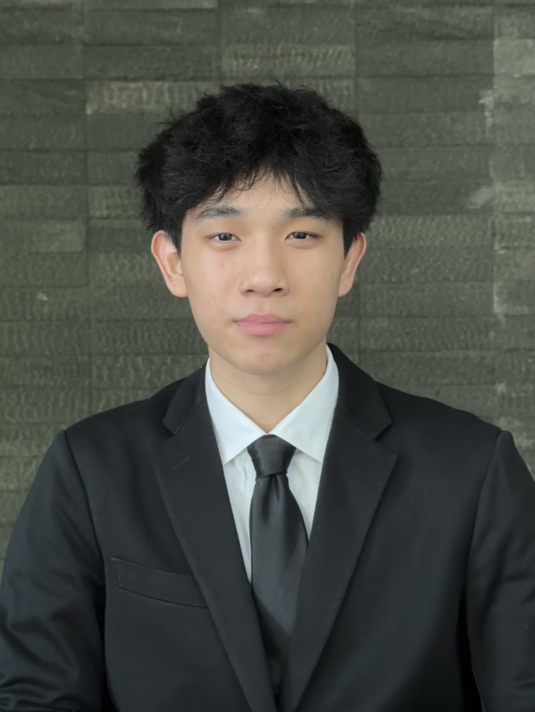

Nicholas Choi's Web Resume
Built using purely HTML as the first Capstone Project for Dr Angela Yu's Complete Web Development Bootcamp
Take the same course here
Nicholas Choi

EDUCATION:
- The University of Michigan, Expected Graduation 2027
- The British International School of Kuala Lumpur, Graduated 2023
EXPERIENCE:
- Alliance Bank Malaysia Berhad. May - August 2024
- Digital Banking Intern
- Responsible for conducting User Acceptance Testing of project Limau
- MDining. March - May 2024
- Prepared and served a variety of food items ensuring adherence to food safety and sanitation standards
- Zeta Pi Professional Technology Fraternity. August 2023 - January 2024
- Comittee Member
- Tutored students on computer science topics, including recursion, tree traversal, and object-oriented programming
- Discussed ethics in the tech industry in biometrics, cybersecurity, social media, and the environment
LANGUAGES, SKILLS, INTERESTS:
- Languages & Skills English, MS Office, C++, Javascript, Julia, MATLAB; currently learning Python
- Frameworks React, NextJS; currently learning Flask, Django, Firebase
- Interests User Experience Design, Extended Reality Technologies, Large Language Models
AWARDS AND CERTIFICATIONS:
- The Complete 2024 Web Development Bootcamp
by Dr Angela Yu, Udemy
OTHER: